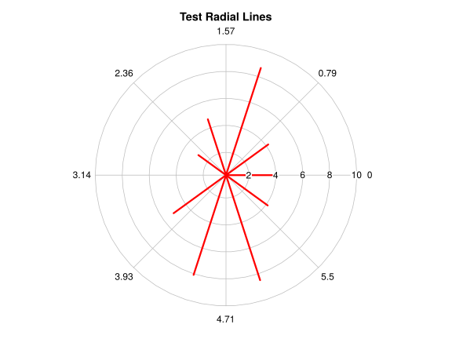
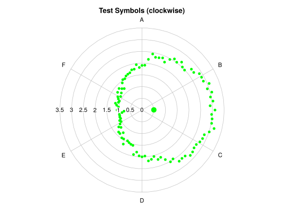

Demo Example
ggradar
- ricardo-bion/ggradar
- A radar plot function for visualising Cluster Profiles by Paul Williamson
- Week 49 | d3radarR by timelyportfolio
mtcars %>%
## add_rownames(var = "group" ) %>%
tibble::rownames_to_column(var = "group") %>%
## mutate_each(funs(rescale), -group) %>%
mutate_at(vars(-group), funs(scales::rescale)) %>%
tail(4) %>%
select(1:10) -> mtcars_radar
ggradar(mtcars_radar)
radial.plot
testlen <- runif(10, 0, 10)
testpos <- seq(0, 18*pi/10, length=10)
testlab <- letters[1:10]
oldpar <-
radial.plot(testlen, testpos, main="Test Radial Lines", line.col="red",
lwd=3, rad.col="lightblue")
testlen <- c(sin(seq(0, 1.98*pi, length=100))+2+rnorm(100)/10)
testpos <- seq(0, 1.98*pi, length=100)
radial.plot(testlen, testpos, rp.type="p", main="Test Polygon", line.col="blue",
labels=LETTERS[1:8])## now do a 12 o'clock start with clockwise positive
radial.plot(testlen, testpos, start=pi/2, clockwise=TRUE, show.grid.labels=2,
rp.type="s", main="Test Symbols (clockwise)", radial.lim=c(0, 3.5),
point.symbols=16, point.col="green", show.centroid=TRUE, labels=LETTERS[1:6])
## one without the circular grid and multiple polygons
## see the "diamondplot" function for variation on this
posmat <- matrix(sample(2:9, 30, TRUE), nrow=3)
radial.plot(posmat, labels=paste("X", 1:10, sep=""), rp.type="p",
main="Spiderweb plot", line.col=2:4, show.grid=FALSE, lwd=1:3,
radial.lim=c(0, 10))## dissolved ions in water
ions <- c(3.2, 5, 1, 3.1, 2.1, 4.5)
ion.names <- c("Na", "Ca", "Mg", "Cl", "HCO3", "SO4")
radial.plot(ions, labels=ion.names, rp.type="p", main="Dissolved ions in water",
grid.unit="meq/l", radial.lim=c(0, 5), poly.col="yellow", show.grid.labels=1)
## add points inside the polygon - radial.lim is supplied by plotrix_env
radial.plot(ions-0.4, rp.type="s", point.symbols=4, point.col="red", add=TRUE)
radmat <- matrix(c(sample(1:4, 4), sample(1:4, 4), sample(1:4, 4), sample(1:4, 4),
sample(1:4, 4), sample(1:4, 4), sample(1:4, 4), sample(1:4, 4),
sample(1:4, 4), sample(1:4, 4)), nrow=4)
## finally a rank clock
radial.plot(radmat, rp.type="l", radial.pos=seq(0, 20*pi/11.1, length.out=10),
label.pos=seq(0, 20*pi/11.1, length.out=10), start=pi/2, clockwise=TRUE,
labels=2001:2010, radial.lim=c(0.2, 4), main="Rank clock")
legend(-1.7, 4, c("Black", "Red", "Green", "Blue"), col=1:4, lty=1)par(xpd=oldpar$xpd, mar=oldpar$mar, pty=oldpar$pty)
## reset the margins
par(mar=c(5, 4, 4, 2))